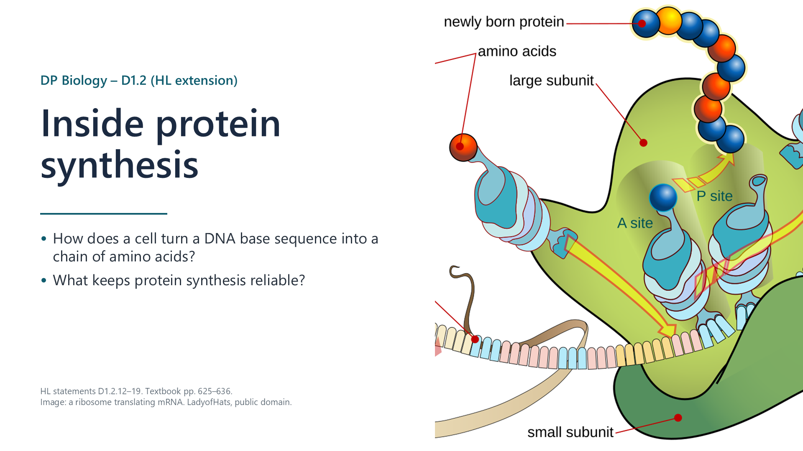
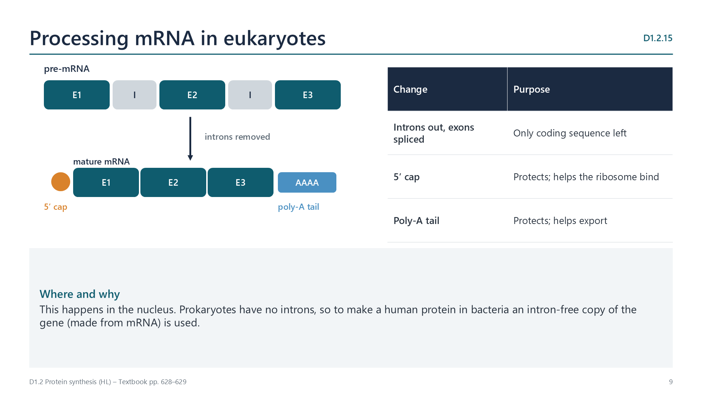
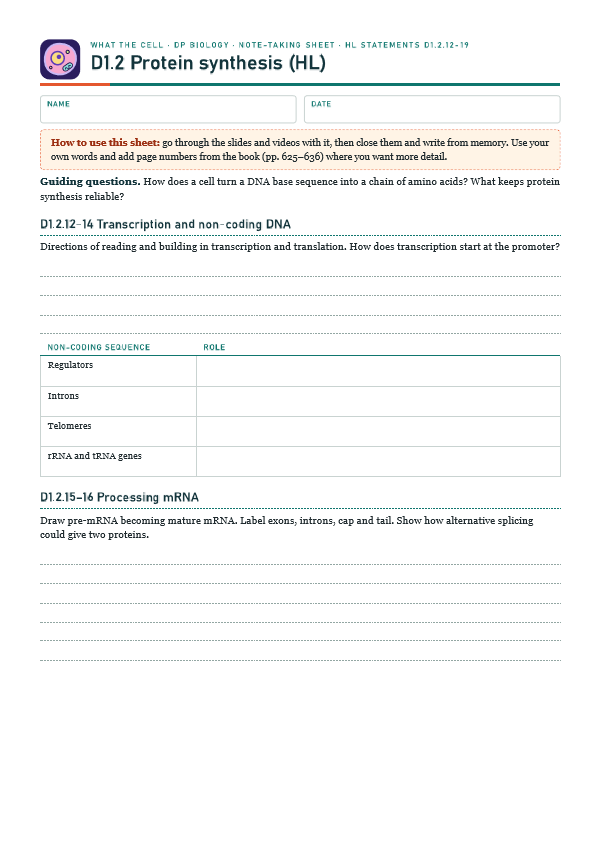
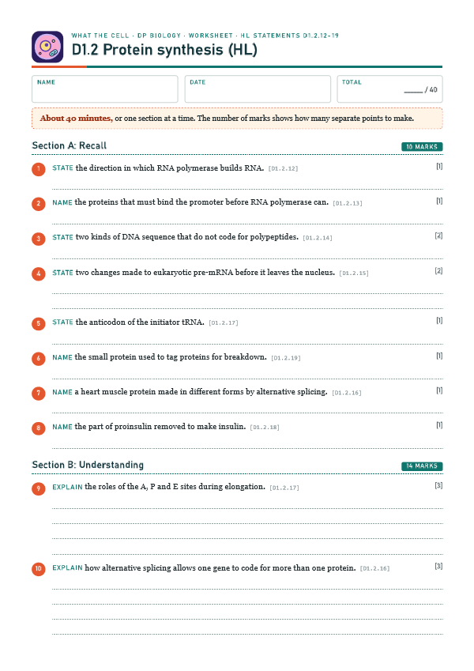
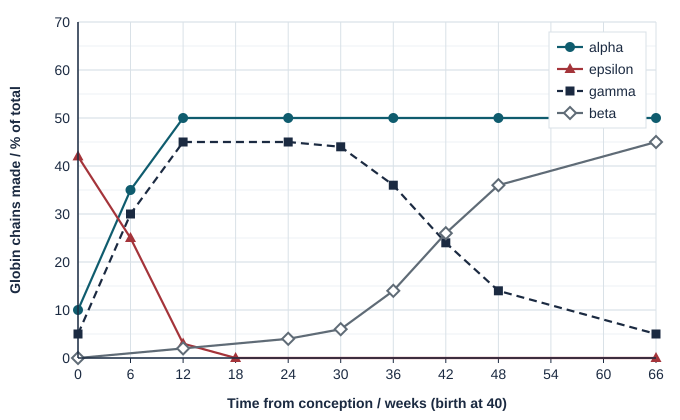

Direction
pp. 625–626RNA polymerase reads the template strand 3′ to 5′ and builds RNA 5′ to 3′, adding nucleotides to the free 3′ -OH. Ribosomes read mRNA 5′ to 3′, building the polypeptide from its amine end to its carboxyl end.

Written for this site from the class slides, with textbook page references for each statement. The chapter is on pages 625–636 of the course textbook. Image credits are on slide 27.
RNA polymerase reads the template strand 3′ to 5′ and builds RNA 5′ to 3′, adding nucleotides to the free 3′ -OH. Ribosomes read mRNA 5′ to 3′, building the polypeptide from its amine end to its carboxyl end.
General transcription factors bind the promoter just before a gene; RNA polymerase then joins them. Activators bound to enhancers can loop round and raise the rate. Without the right factors, the gene is not transcribed. RNA polymerase itself is not a transcription factor.
Only about 1.5% of human DNA codes for polypeptides. Non-coding sequences include regulators of gene expression (promoters, enhancers), introns, telomeres that protect chromosome ends during replication, and genes for rRNA and tRNA, whose RNA is the final product.

In eukaryotes, introns are removed from pre-mRNA and exons spliced together; a 5′ cap and a 3′ poly-A tail are added, which protect the mRNA and help it leave the nucleus and bind ribosomes.
Different combinations of exons can be kept, so one gene can give several versions of a protein. The troponin T gene is spliced differently in foetal and adult heart muscle.
The small subunit binds the 5′ end of mRNA and moves to the start codon AUG; the initiator tRNA (methionine, anticodon UAC) pairs with it; the large subunit joins, with the initiator tRNA in the P site. A tRNA with the next amino acid enters the A site, a peptide bond forms, the ribosome moves one codon, and the empty tRNA leaves from the E site.
Many polypeptides are modified before they work. Pre-proinsulin loses its signal sequence in the ER, giving proinsulin, which folds with three disulfide bonds; later the C-peptide is cut out, leaving insulin: A and B chains held by disulfide bonds.
Damaged or unneeded proteins are tagged with ubiquitin and broken down by proteasomes. The amino acids are reused, so a working proteome depends on constant breakdown as well as synthesis.
Select a video to play it here. Select it again to close it.
Print this guide and complete it as you work through the slides and videos. It asks for your own explanations, so close the notes while you try each section.

The self-check needs JavaScript to run.
A printable worksheet covering all eight statements, from quick recall to data questions and a longer answer. It has 40 marks and takes about 40 minutes, or you can do one section at a time.
Your teacher has the mark scheme.

Questions built on realistic experimental data, in the style of Paper 1B and Paper 2. Work them on paper and show your working. 10 marks in total. Your teacher has the mark scheme.
Eukaryotic genes contain exons, which are kept in mature mRNA, and introns, which are removed. The table shows data for five human genes.
| Gene (protein) | Gene length / kb | Number of exons | Mature mRNA / kb |
|---|---|---|---|
| INS (insulin) | 1.4 | 3 | 0.47 |
| HBB (beta-globin) | 1.6 | 3 | 0.63 |
| PAH (phenylalanine hydroxylase) | 79 | 13 | 2.4 |
| COL1A1 (collagen) | 18 | 51 | 4.8 |
| DMD (dystrophin) | 2200 | 79 | 14 |
Haemoglobin is made of four globin chains, two of one type and two of another. The graph shows which globin chains are made before and after birth.

You will need: Paper strip printed with exons and introns, scissors, tape
Safety: Take care with scissors.
Carry this out with your teacher's supervision and follow your school's lab rules.
In 1977 Roberts and Sharp found that genes can be split. This overturned the simple one gene, one polypeptide picture.
Consider when an exception should change a rule, and when it should only qualify it.
Summarised in our own words. Use each code to find the exact wording in your textbook or the IB subject guide.
© 2026 Akash Parthi Bendran. Please ask before using or sharing any resources from this site: see permission to use.